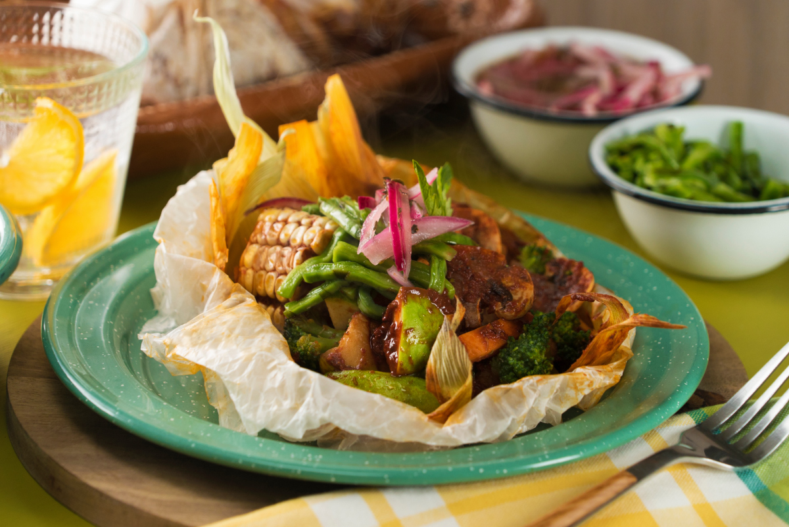

-
ALBÓNDIGAS DE QUÍNOA Y GARBANZO

Estas albóndigas de quínoa y garbanzo te van a encantar por su alto contenido de fibra y gran contenido de minerales, sin duda una excelente opción para sustituir la carne, acompañadas de una salsa de jitomate, que te va a fascinar...
Leer Mas -
TOSTADAS DE CHORIZO VEGANO

Este platillo es ideal para un lunes sin carne ya que no contiene nada de producto animal, pero está lleno de sabor. Ricas tostadas con frijoles y chorizo vegano a base de garbanzos y acompañados de una crema de aguacate. Anímate a prepáralas...
Leer Mas -
MIXIOTE DE VERDURAS
El mixiote es un platillo tradicional mexicano en donde se marina y cocina el relleno, en este caso es preparado con sabrosas y saludables verduras, en un adobo de chile. Cocina esta receta de mixiote de setas con elote, brócoli, zanahoria, chilacayote y champiñones, es ideal si prefieres algo más saludable pero delicioso para la comida...
Leer Mas -
PASTA ALFREDO VEGANA

Anímate a probar esta deliciosa pasta alfredo vegana que en tan sólo 3 pasos estará lista. Es a base de nuez de la india y leche de soya, queda muy cremosita, ideal para cualquier día de la semana o un lunes sin carne...
Leer Mas -
TABULE DE LENTEJAS

Este platillo de tabule inspirado en la cocina libanesa, además de su exquisito sabor, te aportará mucho hierro y tendrás energía todo el día, ya que está hecho a base de lentejas combinadas con cebolla morada, hierbabuena, perejil y una vinagreta de limón...
Leer Mas -
CHAMPIÑONES RELLENOS VEGANOS

Prepara estos deliciosos y originales champiñones rellenos de couscous con cebolla morada, zanahoria y pimientos. En esta receta vas a tener todos los grupos alimenticios que necesitas para tener una dieta deliciosa y balanceada...
Leer Mas -
COLIFLOR AGRIDULCE

Este delicioso y saludable platillo les encantará a chicos y a grandes, prueba la coliflor de una manera diferente, capeada con una salsita agridulce que equilibra muy bien los sabores y las texturas de este platillo...
Leer Mas -
NAGUACATES RELLENOS DE ENSALADA MEDITERRÁNEA
Esta receta de ensalada de aguacate es única e inigualable. Deliciosos aguacates parrillados con una mezcla de ensalada tipo mediterránea a base de garbanzo, jitomate cherry, aceitunas y una vinagreta muy aromática. ¡No lo podrás creer!...
Leer Mas -
CALABAZA RELLENA DE VEGETALES Y QUÍNOA

Estas calabazas rellenas te van llenar de energía con su gran aporte de fibra con un toque delicioso y condimentado de curry, una opción muy fácil y saludable de preparar...
Leer Mas -
ARROZ CON HABAS Y ESPINACAS AL CURRY

Prepara este delicioso platillo de arroz al curry con habas y espinacas que tiene un intenso sabor que te transportará al medio oriente. Es una buena receta para veganos y vegetarianos y lo mejor de todo es que es súper fácil...
Leer Mas